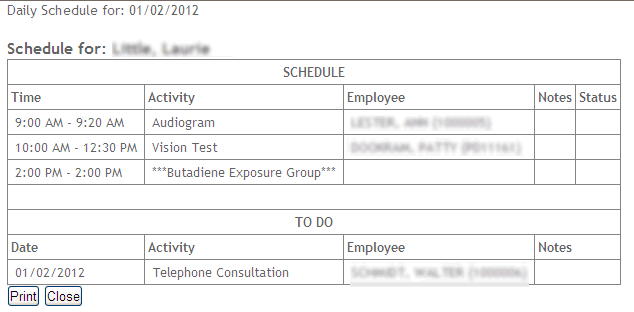
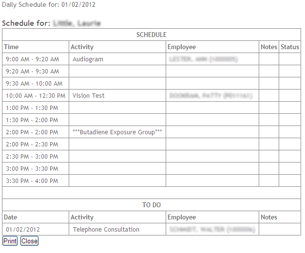

You can print your schedule from any of the schedule views.
Activities marked “Completed” are not included in the printed schedule.
To print your appointments and ToDo list, choose Actions»Print Schedule. A preview of the information to be printed appears, so you can choose to continue with the print or cancel it.

To print your day’s schedule of appointments and ToDo list and include blank rows to indicate your available times, choose Actions»Print Schedule and Availability.
